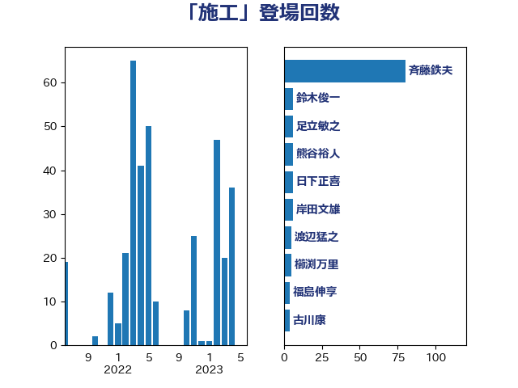

単語「施工」

| 斉藤鉄夫 | 公明党 | 80 回 |
| 鈴木俊一 | 自由民主党 | 6 回 |
| 足立敏之 | 自由民主党 | 6 回 |
| 熊谷裕人 | 立憲民主党 | 6 回 |
| 日下正喜 | 公明党 | 6 回 |
| 岸田文雄 | 自由民主党 | 6 回 |
| 渡辺猛之 | 自由民主党 | 5 回 |
| 櫛渕万里 | れいわ新選組 | 5 回 |
| 福島伸享 | 無所属 | 4 回 |
| 古川康 | 自由民主党 | 4 回 |
| 伊藤岳 | 日本共産党 | 4 回 |
| 西村康稔 | 自由民主党 | 3 回 |
| 秋葉賢也 | 自由民主党 | 3 回 |
| 秋本真利 | 自由民主党 | 3 回 |
| 庄子賢一 | 公明党 | 3 回 |
| 小野泰輔 | 日本維新の会 | 3 回 |
| 小森卓郎 | 自由民主党 | 3 回 |
| 室井邦彦 | 日本維新の会 | 3 回 |
| 古川直季 | 自由民主党 | 3 回 |
| 中川郁子 | 自由民主党 | 3 回 |
| 進藤金日子 | 自由民主党 | 2 回 |
| 豊田俊郎 | 自由民主党 | 2 回 |
| 紙智子 | 日本共産党 | 2 回 |
| 竹詰仁 | 国民民主党 | 2 回 |
| 石井浩郎 | 自由民主党 | 2 回 |
| 田所嘉徳 | 自由民主党 | 2 回 |
| 源馬謙太郎 | 立憲民主党 | 2 回 |
| 清水真人 | 自由民主党 | 2 回 |
| 浜田靖一 | 自由民主党 | 2 回 |
| 榛葉賀津也 | 国民民主党 | 2 回 |
| 市村浩一郎 | 日本維新の会 | 2 回 |
| 山岸一生 | 立憲民主党 | 2 回 |
| 城井崇 | 立憲民主党 | 2 回 |
| 吉井章 | 自由民主党 | 2 回 |
| 倉林明子 | 日本共産党 | 2 回 |
| 伊藤渉 | 公明党 | 2 回 |
| 井林辰憲 | 自由民主党 | 2 回 |
| 高橋千鶴子 | 日本共産党 | 1 回 |
| 青木愛 | 立憲民主党 | 1 回 |
| 鈴木英敬 | 自由民主党 | 1 回 |
| 鈴木憲和 | 自由民主党 | 1 回 |
| 野田国義 | 立憲民主党 | 1 回 |
| 萩生田光一 | 自由民主党 | 1 回 |
| 若宮健嗣 | 自由民主党 | 1 回 |
| 舟山康江 | 国民民主党 | 1 回 |
| 笠井亮 | 日本共産党 | 1 回 |
| 穀田恵二 | 日本共産党 | 1 回 |
| 神津たけし | 立憲民主党 | 1 回 |
| 田村貴昭 | 日本共産党 | 1 回 |
| 田村智子 | 日本共産党 | 1 回 |
| 深澤陽一 | 自由民主党 | 1 回 |
| 浜野喜史 | 国民民主党 | 1 回 |
| 津島淳 | 自由民主党 | 1 回 |
| 本村伸子 | 日本共産党 | 1 回 |
| 山本香苗 | 公明党 | 1 回 |
| 山口壯 | 自由民主党 | 1 回 |
| 山下芳生 | 日本共産党 | 1 回 |
| 小沢雅仁 | 立憲民主党 | 1 回 |
| 小寺裕雄 | 自由民主党 | 1 回 |
| 小宮山泰子 | 立憲民主党 | 1 回 |
| 大石あきこ | れいわ新選組 | 1 回 |
| 大口善徳 | 公明党 | 1 回 |
| 堤かなめ | 立憲民主党 | 1 回 |
| 土田慎 | 自由民主党 | 1 回 |
| 和田政宗 | 自由民主党 | 1 回 |
| 加藤鮎子 | 自由民主党 | 1 回 |
| 仁比聡平 | 日本共産党 | 1 回 |
| 上田勇 | 公明党 | 1 回 |
| 三浦靖 | 自由民主党 | 1 回 |